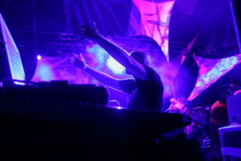
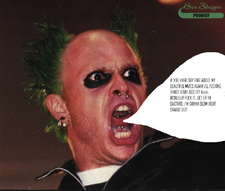
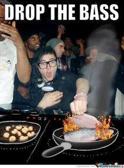

Música electrónica
 De: La Frikipedia, la enciclopedia extremadamente seria.
De: La Frikipedia, la enciclopedia extremadamente seria.
La música electrónica es para drogadictos y pedófilos. Básicamente es la m*%*%a que se escucha de ruidito de fondo cuando jugás a los videojuegos, nada más que a un genio se le ocurrió ponerle nombre y empezar a cobrar derechos.
La mejor forma de trollear a un fan de la música electrónica es decirle «ah, sí... te gusta el techno», porque -si tiene dos dedos de frente- sabrá que el techno es en realidad es sólo un subgénero de electrónica y pasará la restante hora tratando de explicarte las zilliones ramas de ésta mientras trata de probar que no es un estúpido ignorante. Cuando termine, la mejor respuesta es «pero al final son todos ruiditos».
En realidad no es j#%a que la música electrónica tiene más subgéneros que la chucha, casi tanto como el rock. Lo que pasa es que, a diferencia del rock, en la electrónica no necesitás que exista de verdad un movimiento o una escena para crear un subgénero. En el rock, por ejemplo, los nuevos géneros surgen casi siempre por movimientos, como el post-punk, la new-wave, la new-rave, etc.; mientras que en la electrónica no necesitás que exista gente tocando un género para crearlo, solamente se requiere (y ni siquiera eso) una mínima variación del sonido para ponerle un nombre y vendértelo como algo nuevo.
 Amit Duvdevani de Infected Mushroom ganándose el pan diario
Subgéneros
 Keith Flint, vocalista de The Prodigy, en su mejor día.
- House: La "música" que escuchan los que no saben una m*%*%a de electrónica. Sólo para adolescentes que se creen 'cool' y homosexuales reconocidos.
- Techno: "Música" para drogadictos. Tiene una línea de sintetizador aburridísima que se repite hasta que vomitás por las pastillas y el sudor de todos los drogadictos alrededor tuyo.
- Trance: Como el techno pero más homosexual y aburrido.
- Ambient: ¿Alguna vez te preguntaste cuál era la definición de aburrimiento?
- IDM: También conocido como «¡¡¿¿Quién c%*** rayó mi CD??!!»
- Electro: ¿Con ganas de conseguir chicas haciendo "música" pero sin tocar ningún instrumento?
- Industrial: Ruido de temática pornográfica que se puede fusionar con el rock y el metal.
- Trip-Hop: Nadie sabe qué cojones es.
- Indietronica: Una mezcla de pop y electro para afrancesados y maricones varios.
- Big beat: Básicamente una combinación entre electrónica y rock para que los mongos detrás de las bandejas puedan cojer.
- Drum and bass: Como indica el mismo nombre, es la electrónica que incluye batería y bajo, y zambomba, ukelele, destornillador, rallador de queso, vibrador, bolas chinas, entre otros. Los ignorantes lo llaman "dubstep rápido".
- Dubstep: "Música para" nerds y Niños Rata. Alguna ves te preguntaste como sonaría una orgía entre Megatron y Optimus prime? pues e aquí la respuesta. Su origen esta en uno de estos nerds, al escuchar arrancar por primera vez una motosierra.
- Glitch Hop: Como indica su nombre, es hip hop pero con fallos/glitches. Al escuchar este género empiezas a sentir que todo da saltitos y se balancea, los muebles cobran vida, te sientes guay y acabas más mareado que después de subir al Dragon Khan. Los ignorantes lo confunden con el Dubstep.
- Bumpin: "Música" para conducir el coche to' cebao y estamparte contra un árbol.
- Hardcore: Ruido con sucedáneos de melodías por encima para empezar a moverte como un loco y darle o*@%#s a todo lo que pilles.
- Poky: merece un apartado especial.
- Speedcore: también conocido como: el vinilo se ha rayado, ¡ESTO VA A EXPLOTAR! o acabo de perder la fe en la música.
Bandas
 Skrillex preparando pescado y calamares pa cenar.
- Kraftwerk: Los tíos que lo empezaron todo. Si hay alguien a quien culpar, es a estos cuatro nazis alemanes. Sin ellos no estarías escuchando tu m*%*%a de disco de Fatboy Slim ni de Tiesto.
- The Chemical Brothers: La típica banda para la gilada. Para «modernitos» cool con menos conocimiento musical que tu mamá y yuppies insatisfechos sexualmente.
- The Prodigy: Como los Chemical pero con más pinta de malotes y
canis punks.
- Daft Punk: Supuestamente los mejores DJ'S de toda esta tonta lista... se cree que son extraterrestres del planeta OMEGA6664ALFAPORNXXX, autodenominados franceses y humanos.
- DJ Tiesto: es la excepción de la "música" electrónica y los subgéneros a los que pertenecen las canciones de él.
- Boards of Canada: Masturbación IDM. Aburridos como la m*%*%a y pedófilos (en serio, su disco se llama Music has the right to children, «la música tiene derecho a los niños»)
- Aphex Twin: Más masturbación IDM. Cuentan que una vez su mami no le dejó subir a la montaña rusa, entonces cuando volvió a casa empezó a golpear su pianito de juguete y su papi le puso nombre a esa m*%*%a de sonido y se hizo rico. Supuestamente es un genio aunque su único talento es poner cara de j**$$$ psicópata stalker.
- Skrillex: Hijo no reconocido de Popeye y Lady GaGa, famoso por ser el asesino del genero que le dio fama a dubstep, comenzó su vida "Musical" desde que perdiera su voz a causa de gonorrea bucal y se diera cuenta que para ganar pasta no hace falta guitarra, ni batería, ni mucho menos cantar, solo hace falta WOOoooooooWoooooooooooooooWooooooooooooooWoooooooooOOOOOOOOOOOO !!!
- Deadmau5: Es el ratón muerto 5, como sabe tocar si es un raton muerto y poner canciones en el gta chinatown wars y en dj hero. Es considerado un dios supremo del chunda-chunda.
Como ser un excelente Dj de música electrónica
Los fanáticos del chunda-chunda, también llamados
ravers. Se caracterizan por ir más enfarlopados que Morfeo de
Matrix Bien amiguitos, como nosotros sabemos que as llegado aquí buscando un tutorial de como hacer esta música, les entregamos uno por uno los pasos para ser todo un amo del arte de plagiar pistas, mover palitos y manosear botones:
- Tener un mezclador de vinilos . . . Bueno, tener Atomix, VirtualDj, Paint, Internet Explorer o algún otro programa para cortar y pegar música o en su defecto haberse tragado un sintetizador.
- Simular ser un Alíen/Robot/Fantasma/Gay: ser un humano simple y sencillo no bastara para mover masas, recuerda que tus seguidores en su mayoría serán nerds, piensen, que seria mejor para un nerd? verte a ti frente a una mezcladora o ver a Darth Vader frente a una mezcladora ?.
- Crea algo divertido: No importa la calidad, solo crea algo divertido, algunos sonidos repetitivos, uno que otro WoooWooooWoooooooon! Biiiiiiiiiiiiit biiiiiiiiiiiiiiiiit Waaaaaka waaaaaka y listo !
- Tener algún grado de retardo mental: Recuerda esto amiguito, a las masas les encantan los ídolos con coeficientes mentales inferiores, así que para lograrlo te aconsejamos darte barios golpes de maso en tu cabeza.
- Ponerte un nombre curioso: Esta es la ultima y mas importante regla, nunca, pero NUNCA te pongas un nombre decente, intenta demostrar en tu nombre lo gay que eres, si te llamas Juan pon algo así como "Juantarx" si te llamas Pedro podría ser "Petrozz99" si eres parte de un dúo o mas personas simplemente abre tu mente y deja que tus sentimientos gays afloren , algo así como "Bebe´s boys", "Atomic twins", "Gay sisters", "The Kakas", "m*%*%ux", "Bebemuxs semenx", "Cojedmens", The Raskahuele brothers" o "Anal sinphony" ves ! no es tan dificil !.
Warp records
Básicamente es el sello donde se hizo toda la música electrónica importante de los '90. Por sus filas pasaron todos, desde Autechre, Aphex Twin y Squarepusher a Boards of Canada y B12.
Autor(es):
- Fordus
- Roms
- Ou no!
- Johan
- E1324
- Phoenix556
- Djjazz
- Mihert
- Gñapero Solitario
- Two-bit.FC
Frikipedia 2005-2016, Licencia
GFDL 1.2 - Extraído por FrikiLeaks